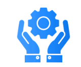

SAP BUSINESS ONE
SAP Business One is an integrated suite of business management applications designed specifically for a company with up to 100 employees and 10 users.

SAP S/4 HANA
The SAP S/4HANA Cloud is an enterprise resource planning (ERP) system with built-in intelligent technologies including AI and machine learning.

SAP BTP
SAP BTP is a software platform that provides users with intelligent enterprise applications, databases, and data management capabilities.

SAP ECC
SAP’s legacy system, SAP ERP Central Component (ECC) is a versatile platform that can be customized to fit any industry.